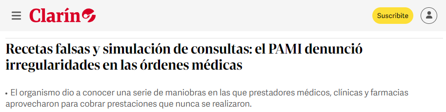
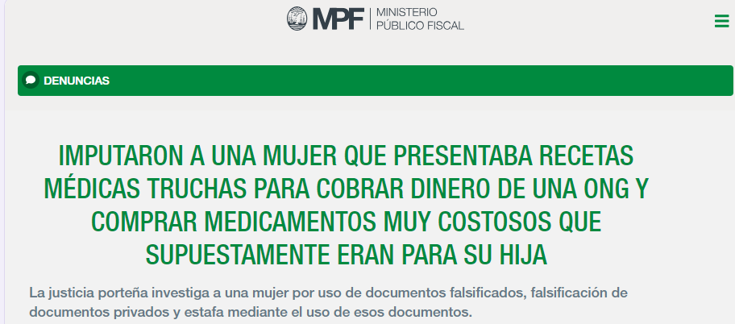
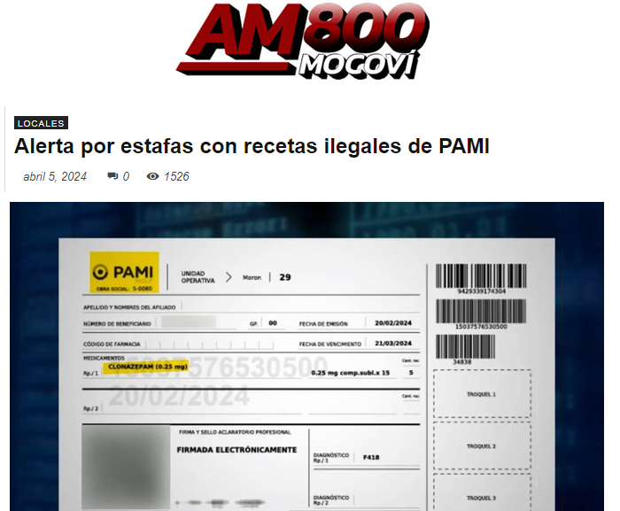
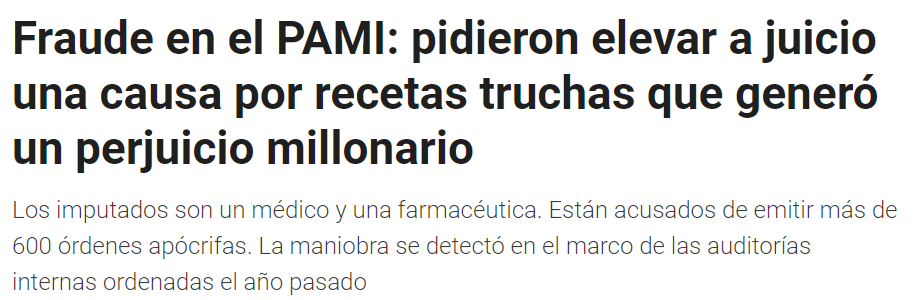

MBA Salud · Healthtech · Trabajo práctico
Porque la credencial del afiliado no es de uso compartido.
Grupo 1 - El mas mejor · 13 de noviembre de 2026
El problema




Infobae
No es una hipótesis: pasa hoy.
El problema
01
Paciente sin cobertura
02
Afiliado presta su credencial
03
Receta a nombre del afiliado
04
Dispensa con cobertura
El costo real
Financiero
Subsidio pagado a un no afiliado
Clínico
Historia clínica del afiliado contaminada
Sistémico
Datos de consumo y epidemiología falsos
Huella Clínica · Grupo 1
3
Qué es
Opción 1
El médico receta desde su plataforma
RCTA
miRX
Otras
Llega por el sistema nacional de receta digital, con CUIR.
Opción 2
Receta y firma desde Huella Clínica
Sale con CUIR, como cualquier receta digital oficial.
App de la obra social
+ Huella Clínica
Un módulo, no una app nueva.
Sobre la receta digital oficial (Ley 27.553)
Sigue cada receta
Quién la firmó: el médico, con su cara
Para quién: el paciente, presente en la consulta
Dónde y quién la retiró: farmacia, hora y Face ID
Todo en vivo para la obra social, con alertas
Huella Clínica · Grupo 1
4
La solución
Si el afiliado colabora, la identidad no alcanza. Por eso, tres capas:
01
Prevenir
En la consulta
Sin Face ID del paciente, no se emite la receta.
02
Detectar
En la farmacia
Nuevo Face ID al retirar y puntaje de riesgo.
03
Investigar
Cada mes
Redes de prescriptores y farmacias; el modelo aprende.
Huella Clínica · Grupo 1
5
Cómo decide
Verde · Todo coincide
Face ID, QR, lugar y hora coinciden: se dispensa con cobertura.
Amarillo · Excepción justificada
Retira un familiar autorizado: con cobertura, y queda una alerta.
Rojo · No coincide
No es el afiliado ni alguien autorizado: sin cobertura y a auditoría.
Opciones que elige la obra social
¿Cuándo valida el paciente?
Al llegar · en la consulta
¿El médico firma con Face ID?
Sí · usuario y clave
Medicamentos críticos
Nunca se bloquean
Huella Clínica · Grupo 1
8
Ahora, ustedes
1
Abran el link o escaneen el QR
En el celular o en la compu.
2
Toquen «Empezar el recorrido guiado»
La guía dice qué tocar en cada paso.
3
Prueben los cuatro roles
Médico, paciente, farmacia y obra social.
Datos ficticios y Face ID simulado. Lo que hagan queda en su dispositivo.
franciscomosse.github.io/
huella-clinica-demo
Huella Clínica · Grupo 1
9
¿Preguntas?